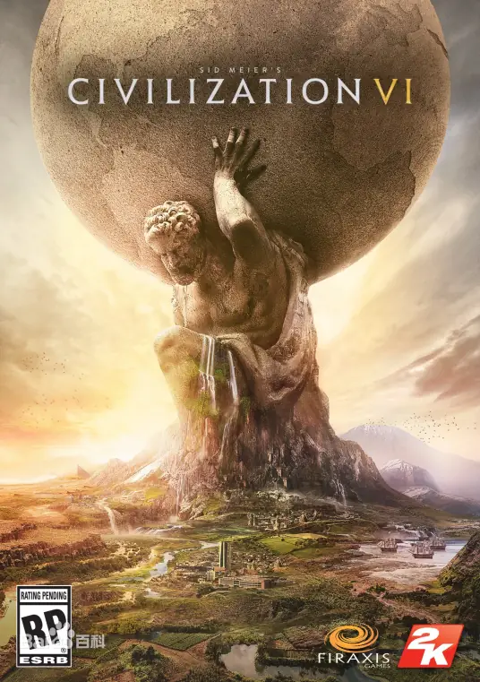
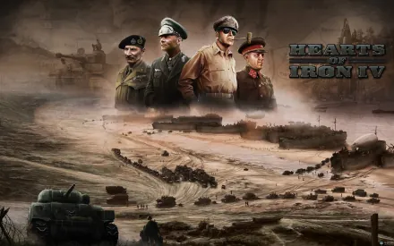

| 游戏中玩家建立起一个帝国，并接受时间的考验。玩家将创建及带领自己的文明从石器时代迈向信息时代，并成为世界的领导者。在尝试建立起世界上赫赫有名的伟大文明的过程中，玩家将启动战争、实行外交、促进文化，同时正面对抗历史上的众多领袖。 2022年11月16日，游戏发行商2K公开了《文明6》的领袖季票，新增了18位可游玩的领袖，12位为新领袖，6位为现有领袖替换版本，宣布季票将于11月21日正式推出。 | 游戏的故事背景设定在第二次世界大战前后，反法西斯战争时期，默认时间是1936-1948年，如若战争还未结束还可以延长作战时间，直到战争结束为止。在游戏中，玩家可以操纵世界上的任意一个国家参与史诗般的世界大战。在游戏过程中会发生许多历史事件，部分历史事件会有一定概率朝相反方向发展，比如刺杀托洛茨基、兴登堡号事件和艾米莉娅·埃尔哈特的环球飞行。 |
| 返回目录 | |